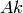
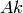

Table of Contents
The Avoided Level Crossing (ALC)  technique probes the energy levels of a
muoniated radical system, and can be used to elucidate the regiochemistry of
muonium addition, dynamic processes, and reaction kinetics, through measurement
of the muon and proton hyperfine coupling interactions.
technique probes the energy levels of a
muoniated radical system, and can be used to elucidate the regiochemistry of
muonium addition, dynamic processes, and reaction kinetics, through measurement
of the muon and proton hyperfine coupling interactions.
Radical systems are formed during muon thermalisation, during which a portion of
the implanted muons are able to capture electrons to form muonium ( ). Muonium
adds to centres of unsaturation in a sample (double or triple bonds) to form a
muoniated radical species. The spins of the muon, unpaired electron, and protons
within the sample interact through the isotropic and anisotropic components of
the hyperfine interaction, forming a quantised system, described by a series of
discrete energy levels.
). Muonium
adds to centres of unsaturation in a sample (double or triple bonds) to form a
muoniated radical species. The spins of the muon, unpaired electron, and protons
within the sample interact through the isotropic and anisotropic components of
the hyperfine interaction, forming a quantised system, described by a series of
discrete energy levels.
In an ALC experiment the magnetic field is incrementally scanned, recording a
specified number of positron events at each step. At certain fields, the energy
levels in the muon and sample system become nearly degenerate, and are able to
interact through the hyperfine coupling interaction. The spins oscillate between
the two energy states resulting in a dip in the polarisation, observed as a
resonance during the magnetic field scan. The three types of ALC resonance
(referred to as ,  , and
, and  resonances) are characterised by the selection
rule
resonances) are characterised by the selection
rule  , where
, where  is the sum of the mz quantum numbers of the spins
of the muon, electron and proton. Isotropic hyperfine coupling interactions
manifest as resonances resulting from muon-nuclear spin flip-flop transitions.
The resonance field is dependent on the magnitude of both the muon and proton
hyperfine interaction (
is the sum of the mz quantum numbers of the spins
of the muon, electron and proton. Isotropic hyperfine coupling interactions
manifest as resonances resulting from muon-nuclear spin flip-flop transitions.
The resonance field is dependent on the magnitude of both the muon and proton
hyperfine interaction ( and , respectively) and can occur in gaseous, liquid,
or solid phase samples. The muon spin flip transition that produces the
resonance only arises in the presence of anisotropy. Radical systems possessing
complete anisotropy produce a single broad resonance and systems with axial or
equatorial anisotropy produce an asymmetrical resonance line shape known as a
powder pattern. The resonance is also observed in radicals from anisotropic
environments. However, these are rarely observed experimentally due to their
characteristically weak intensity line shapes. The magnitude of the hyperfine
interaction is characteristic of the muon binding site, and can result in an
ALC resonance associated with each of the magnetically equivalent nuclei,
for each muoniated radical isomer.
and , respectively) and can occur in gaseous, liquid,
or solid phase samples. The muon spin flip transition that produces the
resonance only arises in the presence of anisotropy. Radical systems possessing
complete anisotropy produce a single broad resonance and systems with axial or
equatorial anisotropy produce an asymmetrical resonance line shape known as a
powder pattern. The resonance is also observed in radicals from anisotropic
environments. However, these are rarely observed experimentally due to their
characteristically weak intensity line shapes. The magnitude of the hyperfine
interaction is characteristic of the muon binding site, and can result in an
ALC resonance associated with each of the magnetically equivalent nuclei,
for each muoniated radical isomer.
The magnetic field position, the full width at half height (FWHH), and the resonance line shape are the important parameters to be extracted from the ALC spectrum. The field position of a resonance is related to the muon and/or nuclear hyperfine coupling constant. They often show strong temperature dependence and can reveal information regarding the structure of the investigated system. The FWHH of a resonance may indicate any motional dynamics present in the system, and can also be used to determine muonium addition rates. The anisotropic environments experienced by radicals in solid samples can produce a variety of ‘powder pattern’ lineshapes, which are characteristic of the orientation of the effective hyperfine tensors relative to the magnetic field, and can thus indicate any reorientational motion present.
In order to extract these parameters accurately from an ALC spectrum it is necessary to determine a baseline, perform a baseline subtraction and then fit the peaks. The Muon ALC interface integrates this sequence of operations hiding the complexity of the underlying algorithms.
The Data Loading step, provides an interface for the PlotAsymmetryByLogValue algorithm, in which a sequence of runs are loaded through the fields First and Last. All datasets with run number between these limits will be loaded, and an error message will be shown if any of them is missing. The user must supply the log data that will be used as X parameter from the list of available log values.
In the Baseline Modelling step, the user can fit the baseline by selecting which sections of the data should be used in the fit, and what the baseline fit function should be. To select a baseline function, right-click on the Function region, then Add function and choose among the different possibilities. Then pick the desired fitting sections.
In the Peak Fitting step, data with the baseline subtracted are shown in the right panel. The user can study the peaks of interest all with the same simple interface. To add a new peak, right-click on the Peaks region, then select Add function and choose among the different possibilities in the category Peak.
Categories: Interfaces | Muon
{kind=link}
{kind=link}
{kind=link}